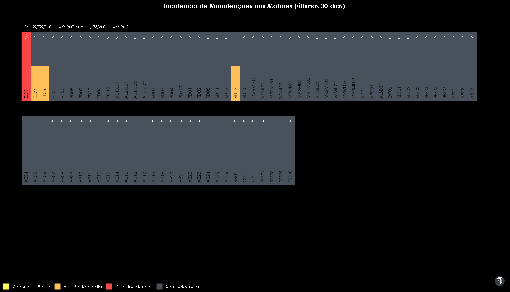
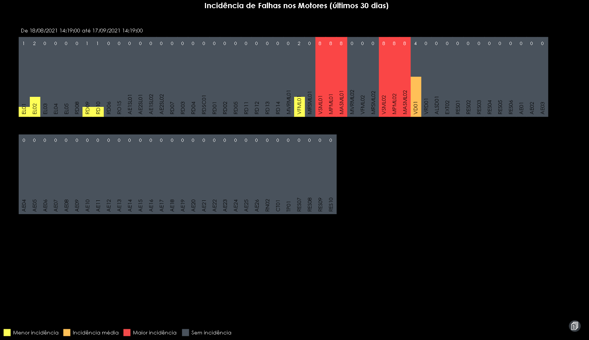

Relatórios
A tela de relatórios tem por finalidade apresentar os dados obtidos através do tempo para geração de incidências de manutenção e falhas nos motores e válvulas para que o usuário possa ter uma visão mais ampla dos incidentes ocorridos.
 Para caracterizar os status de incidências, o sistema tem por identificação as seguintes cores para cada status.
| Cor | Status |
|---|---|
| ■ | Menor Incidência |
| ■ | Incidência Média |
| ■ | Maior Incidência |
| ■ | Sem Incidência |